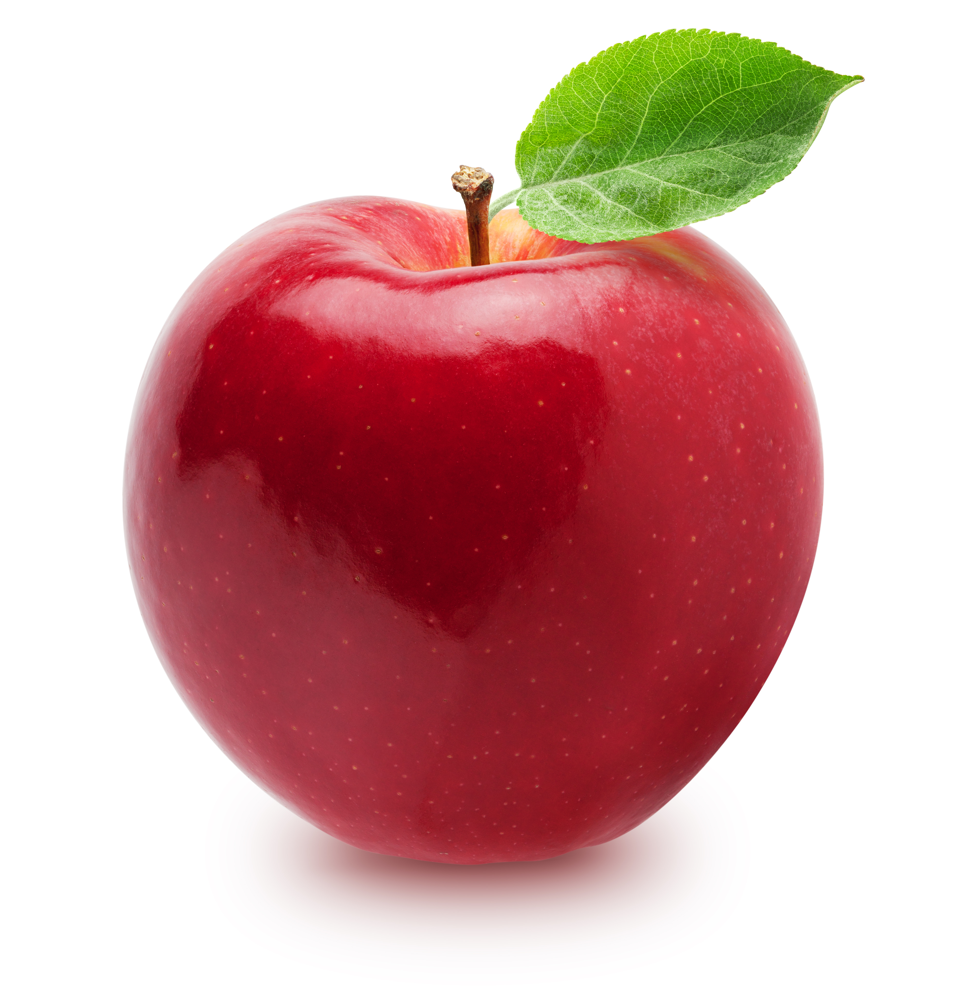
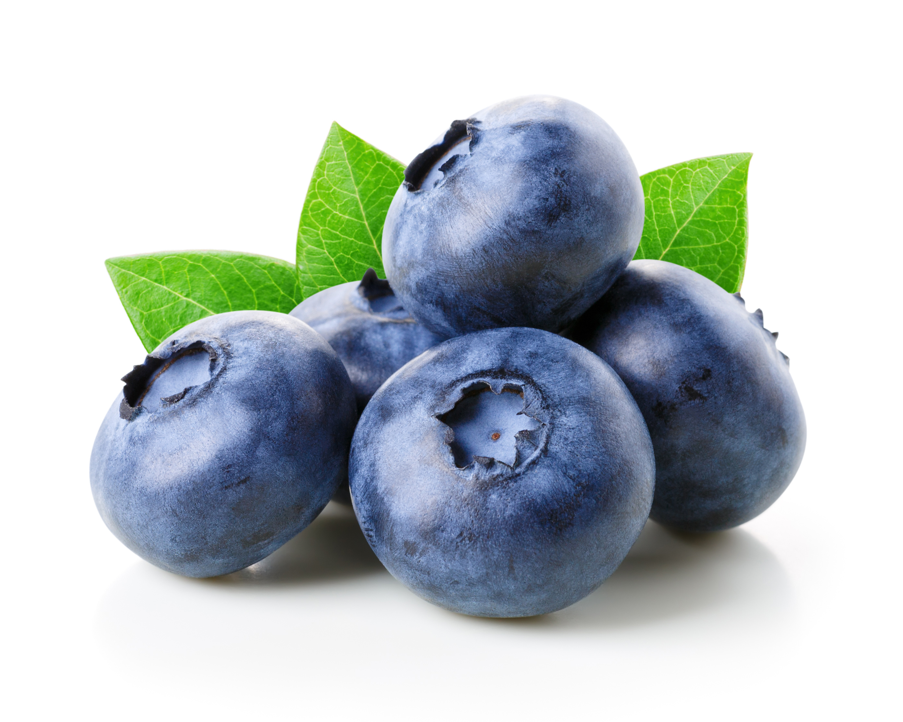
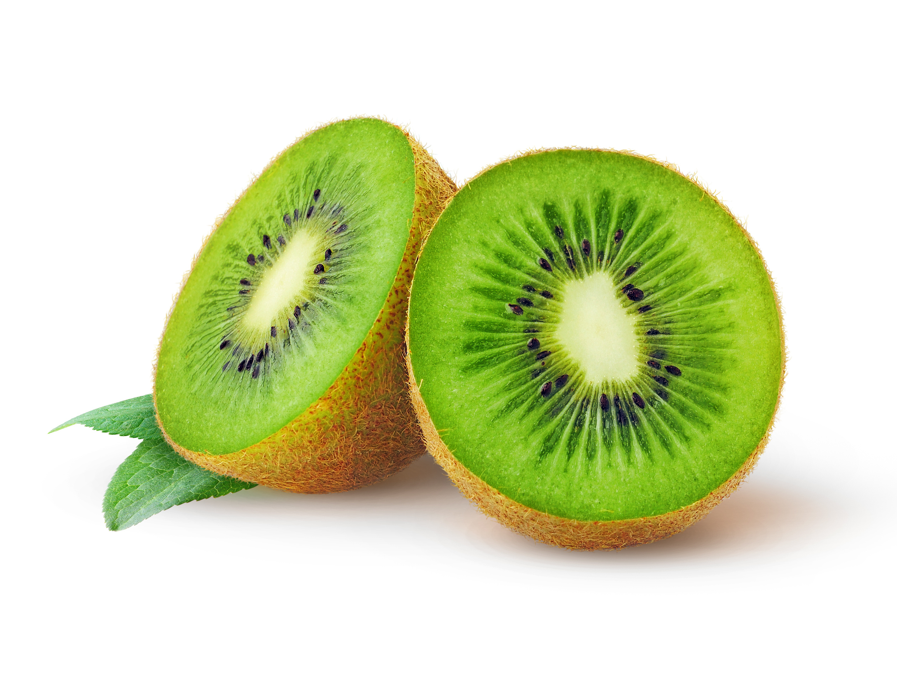
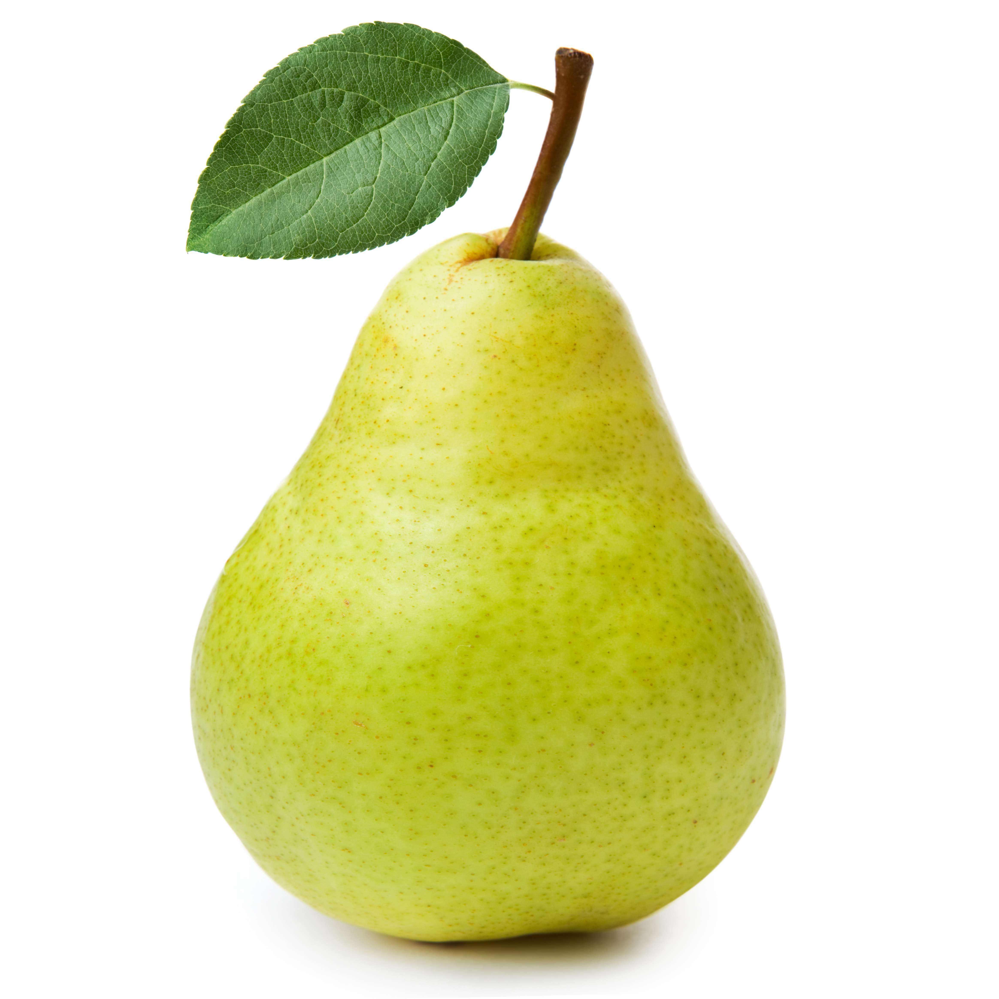
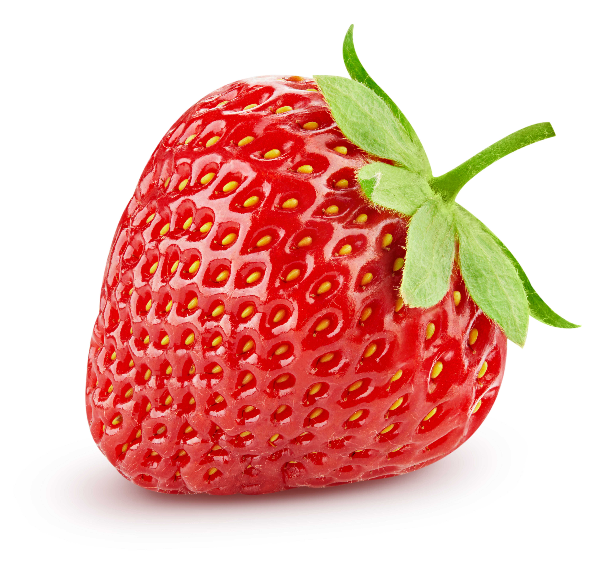

Fruits are important sources of vitamins and carbohydrates like fiber and sugar. They are low in calories and naturally sweet. Fruits and their juices are good sources of water, too. Different fruits contain different vitamins, so it is important to eat a variety of fruits. Mangoes, papayas, melons and citrus fruits, like oranges and grapefruit, are high in vitamin C. Cantaloupe, apricots, peaches, and nectarines are sources of vitamin A. Whole fruits like apples and grapes contain more fiber than fruit juices and sauces, like applesauce and grape juice. Dried fruits like figs, prunes and raisins are good sources of fiber, too. Canned fruits packed in syrup have a lot of added sugar. They are higher in calories than fresh fruits. When you shop for canned fruits, look for fruit that is packed in juice instead of syrup.